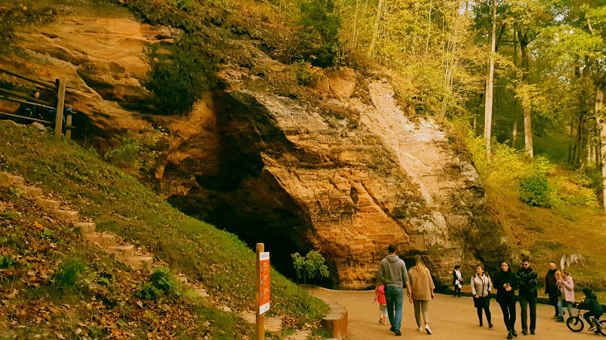
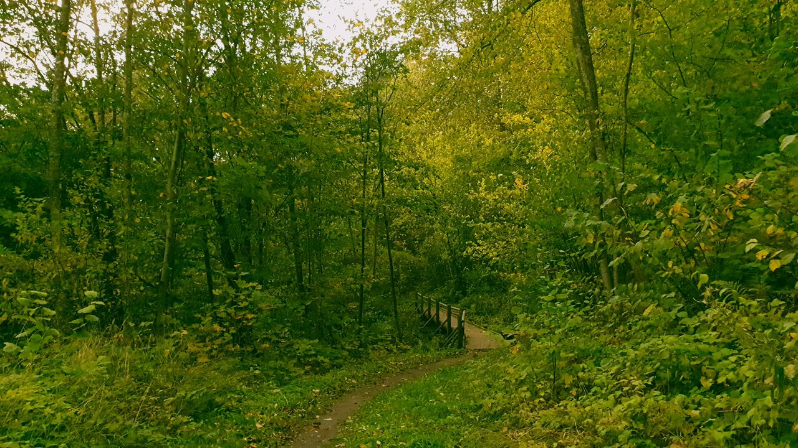

Apskates objekti

Gūtmaņala
Baltijas lielākā ala - grota. Senākais tūrisma objekts Latvijā. Gūtmaņala pazīstama kā sena kulta vieta. Uz alas saglabājušies uzraksti no 17.gs. Šeit aizsākusies leģenda par Turaidas rozi.

Krimuldas sanatorija
Krimuldas sanatorija izveidota Krimuldas pils ēkā, kas celta 1848.gadā firstam Paulam fon Līvenam. Sanatorijas vajadzībām 20.gadsimta 30.gados tika izbūvēts pils mansarda stāvs, pils priekšā koka konstrukcijā uzbūvēts vasaras paviljons. No 20.gadsimta 20-30.gadiem pilī atrodas sanatorija, pašlaik - rehabilitācijas centrs "Krimulda".

Siguldas parks - daļa no Gaujas nac. parka
Ideāla rudens pastaigu un fotosesiju vieta. Ne velti tur var sastapt tūkstošiem tūristu katru oktobri.